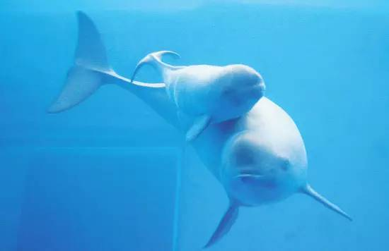
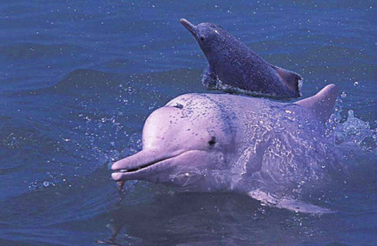
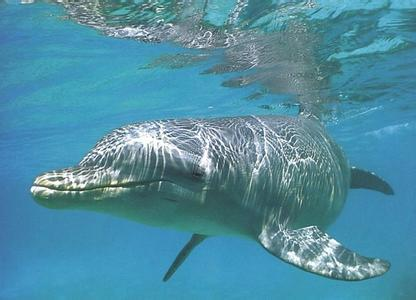

白鱀豚身体呈纺锤形，全身皮肤裸露无毛，有恒定体温，一般在36℃左右 [3] 。成体一般背面呈浅青灰色，腹面呈白色，在阳光的照耀下尤其光亮，新生幼体体色略深。水平伸展的鳍肢和尾鳍上下两面分别与背面和腹面同色，这样的颜色分布恰好与环境颜色相符。由水面向下看时，青灰色的背部和江水混为一体很难分辨；由水底向上看时，白色的腹部和水面反射的强光颜色相近也很难被发现。这使得白鱀豚在逃避敌害、接近猎物时，有了天然的隐蔽屏障。
白鱀豚吻部狭长，约30厘米，前端略微上翘，后方的嘴角闭合线也略微上扬，看上去像在微笑。口中约有130颗圆锥形的同型齿，受颞颌关节功能的限制而无法用于咀嚼，但对猎物可造成瞬间性的杀伤，并能有效地将猎物牢牢固定在口中，防止其挣脱。眼极小，在嘴角后上方。耳孔呈针眼状。具有单一的圆形喷气鼻孔，位于头顶左侧。鳍肢较宽，末端钝圆；背鳍低矮，呈三角形；尾鳍呈新月形。
雌性体型大于雄性。成体全长1.5—2.5米，极限身长雄性2.3米，雌性2.5米；体重90—150千克，极限体重230千克。
中国共有三种鲸豚类被列入一级保护动物，除白鱀豚外的两种是江豚和中华白海豚（江豚原为二级保护动物，2017年5月国家农业部将其提升至一级）。三个物种之间常有混淆，实际它们的形态差别显著，进化谱系上分属不同的类群，三者间没有很近的亲缘关系。
江豚实为窄膂露脊鼠海豚（Neophocaena asiaeorientalis）的长江亚种N.a.asiaeorientalis，属于鼠海豚科，体型较白鱀豚小，吻部短而圆钝，并且没有背鳍。窄膂露脊鼠海豚另有一个东亚近海亚种N.a.sunameri，栖居在马祖列岛以北的中国、朝鲜半岛和日本沿岸海域。窄膂露脊鼠海豚的近亲是印太露脊鼠海豚（Neophocaena phocaenoides），分布在马祖列岛以南，向西沿着东南亚、南亚、西亚一直延伸到波斯湾的西太平洋和北印度洋近岸海域。
“中华白海豚”系太平洋驼海豚（Sousa chinensis）的中国通称，属于海豚科，是名副其实的“海豚”，分布在西太平洋和印度洋，并不生活在长江里。其体型较白鱀豚大，中国东海和南海的种群成年后全身呈粉白色，明显异于白鱀豚的青灰色。此外，中华白海豚常以整个身子跃出水面，而白鱀豚生性羞怯，仅在换气时将头部和背部露出水面。
白鱀豚寿命可达30年。雄性4岁、雌性6岁性成熟。野生状态下，成年两性比例为1：1，但雌性受孕率一般仅为30%，自然繁殖率很低。成年雌性一年中有两次发情期，分别在3—5月和8—10月。妊娠期10～11个月，翌年1—2月分娩。每两年繁殖一次，每胎1仔，偶有双胞胎，出生时体长80厘米左右。刚出生的幼豚通过吮吸母豚的乳汁维持能量，并随群活动。
白鱀豚喜欢群居，尤其在春天交配季节，集群行为就更明显。每群一般2—16头。其活动范围广，但对水温条件要求较高，经常在一个固定区域停留一段时间，待水温条件发生改变后，又迁入另一地域。
白鱀豚喜在江流中心的深水区活动，偶尔也进入湖泊、支流与干流汇合处。胆怯害羞，很少靠近岸边和船只，但常在晨昏时游至浅水区捕食鱼虾。白鱀豚视觉很差，靠自身发出的超声波讯号发现食物并突袭式吞食。它的消化能力很强，捕到食物不经过咀嚼，整口吞入腹中。食量甚大，一般摄食量可占体重的10%—12%。猎食对象以体长小于6.5厘米的鱼类为主，也吃少量的水生节肢动物和水生植物。
白鱀豚用肺呼吸，每次呼吸时，头顶及呼吸孔先浮出水面，接着露出背部，出水呼吸时间约1—2秒钟，潜水时间每次约20秒，长潜时可达200秒。每隔一两分钟就要露出水面换一次气，有时会喷出水花，出水呼吸时会发出声响。当天气闷热、暴雨即将来临之际，它便频频露出水面一起一伏，群众称为“白鱀拜江”。
从三峡地区的宜昌葛洲坝上游35千米处，一直到上海附近的长江入海口，包括洞庭湖和鄱阳湖在内，全长约1700千米的江水中都有白鱀豚的分布。但是长期以来受到人类活动的影响，其种群数量和分布区域逐渐缩小。后来仅局限于长江中下游及与其连通的洞庭湖、鄱阳湖、钱塘江等水域中，尤以荆州市沙市区以下的湖北、湖南、安徽、江苏的江段为多。
到1990年代，白鱀豚在洞庭湖与鄱阳湖已经绝迹。在长江中分布范围的上限也已移至葛洲坝下游170千米处的荆州附近。其下限缩减更为严重，到南京附近就已踪迹罕至。在1997年至1999年的观测中，在南京下游临近的江阴以下就再未有发现。
2000年至2004年的几次观测中，其分布主要限于长江铜陵段、九江段和洪湖段三个区域。最后一次得到证实在野外发现白鱀豚，是2004年8月在长江南京段发现的一头搁浅死去的尸体。
2006年11月6日—12月13日，近40名科学家对宜昌到上海长江中下游的干流1700千米江段进行地毯式搜索，未发现一头白鱀豚，因此不少科学家怀疑白鱀豚已经灭绝。但可以推断，长江中下游还有少量残存，然而仅凭这最后几只个体，已经难以延续种群。